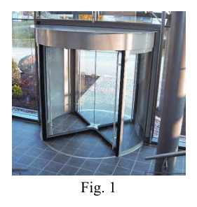
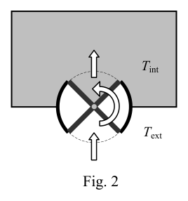
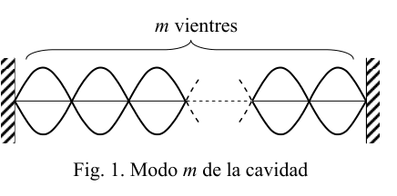
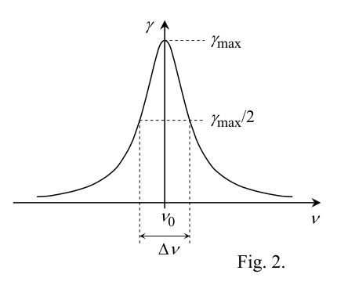
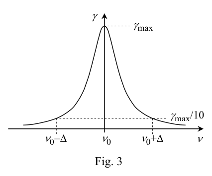
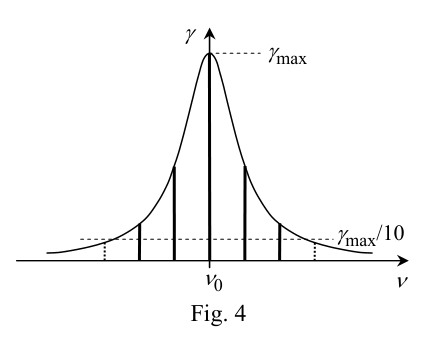
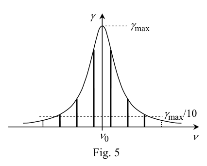

P1. La larga excursión a un cometa. El 2 de marzo de 2004, desde la base de Kourou en la Guayana francesa, se lanzó al espacio la sonda espacial Rosetta. Así empezó la extraordinaria misión de la Agencia Espacial Europea, uno de cuyos objetivos era depositar el módulo Philae, que la sonda llevaba a bordo, sobre la superficie del cometa 67P, descubierto en 1969 por los astrónomos Klim Churyumov y Svetlana Gerasimenko. En su largo viaje, el Rosetta aprovechó los impulsos gravitatorios propiciados por la Tierra (2005), por Marte (2007), por la Tierra de nuevo (2007), por el asteroide Steins (2008), otra vez por la Tierra (2009), y finalmente, por el asteroide Lutetia. En junio de 2011 el Rosetta entró en el espacio profundo, la parte más aburrida del viaje, y se echó una siestecita hasta que lo despertaron el 20 de enero de 2014, ya que en agosto tenía que comenzar las complicadas maniobras de aproximación al cometa 67P. De mayo a agosto de 2014, estando ya muy próximo al lejano y pequeño cometa, Rosetta tuvo que trabajar duro adquiriendo datos del cometa y haciendo reconocimientos detallados de su superficie para elegir el “campo de aterrizaje” de su módulo Philae. En la figura 1 se muestra una fotografía del cometa hecha desde la sonda, y se compara con un campo de futbol1. Por fin, tras varios cambios de órbita alrededor del cometa, y siguiendo una trayectoria de colisión, a las 08:35 GMT del 12 de noviembre Rosseta dejó “caer” al Philae, como se esquematiza en la figura 2, desde una altura km 5 , 22
H y con una velocidad inicial cm/s 0 , 18
iv respecto al cometa. Casi siete horas después Philae alcanzó la superficie de 67P. Tras el desprendimiento del módulo, Rosetta cambió su trayectoria y pasó a una órbita elíptica alrededor del Sol, acompañando al cometa. Se espera que en agosto de 2015 se alcance el perihelio de la órbita, y en diciembre se considerará terminada la misión. A las enormes dificultades técnicas de este tipo de misiones hay que añadir una más, el considerable tiempo que transcurre desde que una señal de radio se emite en la Tierra hasta que es recibida por la sonda, o viceversa. a) Calcula el tiempo, t , que tardaba en llegar una señal desde la Tierra al Rosetta cuando estaba en las proximidades del cometa, a una distancia ua 3,41
D . ( m) 10 50 ,1 ua 1 11
.
1 El “campo de futbol” es una unidad cada vez más empleada en los medios de comunicación. Se usa indistintamente como unidad de longitud, de superficie e incluso ¡de volumen! A este paso, pronto sustituirá al viejo “metro” y sus derivados. Sin embargo, nihil novum sub sole, el Stadio ( ) era una unidad de longitud de la antigua Grecia. Equivalía a la longitud del estadio de Olimpia.
Fig. 1 “Aterrizaje” del Philae en el cometa 67P Separación del Philae Fig. 2 OLIMPIADA ESPAÑOLA DE FÍSICA FASE DE ARAGÓN olimpiada_de_fisica.unizar.es Como se aprecia en la figura 1, el cometa 67P no se parece mucho a una esfera, pero en Física los “modelos” tienen una importancia capital para obtener resultados aproximados, y para elaborar estos modelos la imaginación juega un papel destacado. En nuestro caso, vamos a considerar que, en primera aproximación, el cometa es esférico, de masa kg 10 0 ,1 13
c M y densidad 3 kg/m 470
c
(datos obtenidos por el propio Rosseta). b) Con este modelo esférico, ¿cuál es el radio del cometa, c R ?
Además de los anteriores, en adelante puedes emplear también los siguientes datos:
Masa de la Tierra: kg 10 5,97 24
T M
Radio de la Tierra: m 10 6,37 6
T R
Aceleración de la gravedad en la superficie de la Tierra: 2 m/s 9,81
T g . c) Determina la expresión analítica de la velocidad del Philae al alcanzar la superficie del cometa, f v , y calcula su valor. d) Determina y calcula la relación entre aceleración de la gravedad en la superficie de la Tierra y la correspondiente en la superficie del cometa, c T g g / . e) Determina y calcula la velocidad de escape, e v , de un cuerpo lanzado desde la superficie del cometa 67P.
El “aterrizaje” del Philae resultó ser más complicado de lo esperado. Fallaron los arpones que tenían que inmovilizarlo nada más tocar la superficie del planeta y el Philae rebotó dos veces hasta quedar en reposo en un lugar inapropiado y sombrío. De hecho, la escasa radiación solar que le llegaba hizo que sus baterías no pudiesen recargarse según lo previsto y se agotasen pronto. Aunque tuvo tiempo para transmitir información muy valiosa del cometa2, se “durmió” de nuevo y quedó a la espera de volver a despertar cuando el 67P se aproxime al Sol. ¡Suerte, Philae!
2 Esta misión ha sido declarada por la prestigiosa revista Science como el más importante descubrimiento científico del año 2014. OLIMPIADA ESPAÑOLA DE FÍSICA FASE DE ARAGÓN olimpiada_de_fisica.unizar.es P1 Solución a) Las señales que se envían a la sonda son ondas electromagnéticas que se propagan a la velocidad de la luz, km/s 10 0 ,3 8
c . Por tanto, el tiempo que tarda en llegar una señal desde la Tierra a un lugar separado una distancia m 10 5,12 ua 3,41 11
D , es
c D t
in m 4 , 28 s 10 71 ,1 3
t
b) El volumen del cometa, supuesto esférico, es
3 3 4 c c c R M V
3 /1 4 3
c c c M R
km 7 ,1
c R
(1) c) El módulo Philae se desprende del Rosetta desde una altura H y con una velocidad inicial iv , ambas conocidas, y cae hacia el cometa bajo la acción de su campo gravitatorio. Llamando m a la masa del módulo, la conservación de su energía mecánica implica
c c f c c i R mM G v m R H mM G v m
2 2 2 1 2 1
De donde
H R R GM v v c c c i f 1 1 2 2 2
Expresando G en función de gT, la aceleración de la gravedad en la Tierra, T T T M R g G / 2
, resulta
2 /1 2 2 1 1 2
H R R M M R g v v c c T c T T i f
m/s 87 , 0
f v
d) Las expresiones de la aceleración de la gravedad en las superficies del cometa y de la Tierra son, respectivamente
2c c c R M G g
y 2 T T T R M G g
La relación entre ellas es
2 2 T c c T c T R R M M g g
4 10 3 , 4
c T g g
e) La velocidad de escape es la que habría que imprimir a un cuerpo para que, lanzado desde la superficie del cometa, alcanzase una distancia infinita con velocidad cero, es decir con energía mecánica nula. Como esta energía debe conservarse, también debe ser nula en el instante inicial, o sea
0 2 1 2
c c e R mM G v m
c c e R M G v 2 2
2 /1 2 2
c T T c T e R R M M g v , m/s 88 , 0
e v OLIMPIADA ESPAÑOLA DE FÍSICA FASE DE ARAGÓN olimpiada_de_fisica.unizar.es
 Fotografia del cometa 67P da lontano
Fotografia del cometa 67P da lontano
 Separazione del Philae dal cometa
Separazione del Philae dal cometa
Topic: Gravitation, Newtonian Mechanics, Astrophysics Metodi: Newton’s Law of Gravitation, Conservation of Energy, Kinematic Equations Competenze: Physical Reasoning, Mathematical Modeling, Unit Conversion Objects: Satellite, Planet Fonte: Testo (PDF) — p.2
P1. L’escursione lunga verso una cometa. Il 2 marzo 2004, dalla base di Kourou in Guayana francese, la sonda è stata lanciata nello spazio Rosetta spaziale. Così è iniziata la straordinaria missione dell’Agenzia Spaziale Europea, uno dei cui obiettivi è Il primo piano era quello di depositare il modulo Philae, che la sonda portava a bordo, sulla superficie della cometa 67P, scoperta nel 1969 dagli astronomi Klim Churyumov e Svetlana Gerasimenko. Nel suo lungo viaggio, la Rosetta ha sfruttato gli impulsi gravitazionali favoriti dalla Terra (2005), per Marte (2007), per la Terra di nuovo (2007), per l’asteroide Steins (2008), di nuovo per la Terra (2009), e Finalmente, per l’asteroide Lutetia. Nel giugno 2011 la Rosetta è entrata nello spazio profondo, la parte più annoiato dal viaggio, e si mise a fare un po’ di siesta fino a quando lo svegliarono il 20 gennaio 2014, dato che nell’agosto doveva iniziare le complicate manovre di avvicinamento alla cometa 67P. Dal maggio all’agosto 2014, Essendo già molto vicino alla lontana e piccola cometa, Rosetta ha dovuto lavorare duramente per acquisire dati del La sua superficie è stata analizzata in dettaglio per scegliere il campo di atterraggio. modulo Philae. La figura 1 mostra una fotografia della cometa fatta dalla sonda, e la confronta con un Campo di calcio1. Infine, dopo vari cambiamenti di orbita intorno alla cometa, e seguendo un percorso di collisione, le 08:35 GMT del 12 novembre Rosseta ha lasciato il Philae, come schematizzato nella figura 2, da una altezza km 5 , 22
H e con una velocità iniziale cm/s 0 , 18
iv
- per quanto riguarda il cometa. Quasi sette ore dopo Philae ha raggiunto la superficie di 67P. Dopo la scessione del modulo, Rosetta ha cambiato rotta e è passata a un’orbita elliptica attorno al Sole, accompagnando la cometa. L’obiettivo è quello di raggiungere il perielio dell’orbita, e a dicembre la missione sarà considerata terminata. Al problema delle enormi difficoltà tecniche di questo tipo di missioni si deve aggiungere un’altra, la notevole difficoltà tecnica di questo tipo di missioni. il tempo che passa dal momento in cui un segnale radio viene emesso sulla Terra fino a quando viene ricevuto dalla sonda; o Al contrario. a) Calcola il tempo, t , che ha tardato a raggiungere un segnale dalla Terra alla Rosetta quando era in Proximità della cometa, a distanza ua 3,41
D . ( m) 10 50 ,1 ua 1 11
.
1 Il campo di calcio è un’unità sempre più utilizzata nei media. È usato indistintamente come unità di lunghezza, superficie e anche volume! A questo passo, presto sostituirà l’antico metro e i suoi derivati. Tuttavia, nihil novum Sub sole, lo Stadio ( ) era un’unità di lunghezza dell’antica Grecia. L’equivalente alla lunghezza dello stadio Olimpico.
Fig. 1 Atterraggio del Philae sulla cometa 67P Separazione di Philae Fig. 2 L’Olimpiade di Fisica di Spagna Fase di ARAGON olimpiada_de_fisica.unizzare.es Come si vede in figura 1, la cometa 67P non assomiglia molto a una sfera, ma in fisica le I modelli sono di grande importanza per ottenere risultati approssimativi, e per elaborare questi modelli la l’immaginazione gioca un ruolo importante. Nel nostro caso, consideriamo che, in primo luogo, il La cometa è sferica, di massa. kg 10 0 ,1 13
c M e densità 3 kg/m 470
c
(dati ottenuti dal Rosseta). b) Con questo modello sferico, qual è il raggio della cometa, c R ?
Oltre a quanto precede, potete utilizzare anche i seguenti dati:
Massa della Terra: kg 10 5,97 24
T M
Radio della Terra: m 10 6,37 6
T R
Accelerazione della gravità sulla superficie terrestre: 2 m/s 9,81
T g . c) Determina l’espressione analitica della velocità del Philae raggiungendo la superficie della cometa, f v , y Calcola il suo valore. d) Determina e calcola il rapporto tra l’accelerazione della gravità sulla superficie della Terra e la corrispondente alla superficie della cometa, c T g g / . e) Determina e calcola la velocità di uscita, e V, di un corpo lanciato dalla superficie della cometa 67P.
L’atterraggio del Philae si è rivelato più complicato del previsto. I harmoni che dovevano fare sono falliti. Lo impiccano, non toccano la superficie del pianeta e il Philae rimbalza due volte fino a rimanere a riposo in un luogo inappropriato e oscuro. Infatti, la scarsa radiazione solare che gli arrivava fece che le sue batterie non fossero più in grado di funzionare. Potrebbero ricaricarsi come previsto e finirebbero presto. Anche se ha avuto tempo per trasmettere informazioni La cometa, molto preziosa, si addormentò di nuovo e rimase in attesa di risvegliarsi quando il 67P si è ripreso. Approcciatevi al sole. - Buona fortuna, Philae!
2 Questa missione è stata dichiarata dalla prestigiosa rivista Science come la più importante scoperta scientifica dell’anno 2014. L’Olimpiade di Fisica di Spagna Fase di ARAGON olimpiada_de_fisica.unizzare.es P1 Soluzione a) I segnali inviati alla sonda sono onde elettromagnetiche che si diffondono alla velocità della luce, km/s 10 0 ,3 8
c . Quindi il tempo che ci vuole per raggiungere un segnale da Terra a un luogo separato una distanza m 10 5,12 ua 3,41 11
D , es
c D t
in m 4 , 28 s 10 71 ,1 3
t
b) Il volume della cometa, presumibilmente sferica, è
3 3 4 c c c R M V
3 /1 4 3
c c c M R
km 7 ,1
c R
(1) c) Il modulo Philae si allontana dalla Rosetta da un’altezza H e con una velocità iniziale iv , entrambi E’ un’atmosfera che si trova in una zona molto conosciuta, e che cade verso la cometa sotto l’azione del suo campo gravitazionale. Chiamando m alla massa del La conservazione della sua energia meccanica implica
c c f c c i R mM G v m R H mM G v m
2 2 2 1 2 1
Da dove
H R R GM v v c c c i f 1 1 2 2 2
Esprimendo G in funzione di gT, l’accelerazione della gravità sulla Terra, T T T M R g G / 2
, si traduce
2 /1 2 2 1 1 2
H R R M M R g v v c c T c T T i f
m/s 87 , 0
f v
d) Le espressioni dell’accelerazione della gravità sulle superfici della cometa e della Terra sono: rispettivamente
2c c c R M G g
y 2 T T T R M G g
La relazione tra loro è
2 2 T c c T c T R R M M g g
4 10 3 , 4
c T g g
e) La velocità di uscita è quella che si dovrebbe stampare su un corpo per che, lanciato dalla superficie La distanza infinita raggiungibile con velocità zero, cioè con energia meccanica zero. Poiché questa energia deve essere conservata, deve essere anche nulla all’istante iniziale, cioè
0 2 1 2
c c e R mM G v m
c c e R M G v 2 2
2 /1 2 2
c T T c T e R R M M g v , m/s 88 , 0
e v L’Olimpiade di Fisica di Spagna Fase di ARAGON olimpiada_de_fisica.unizzare.es
Foto della cometa 67P da lontano
Separazione del Philae dal cometa
Topic: Gravitation, Newtonian Mechanics, Astrophysics Metodi: Newton’s Law of Gravitation, Conservation of Energy, Kinematic Equations Competenze: Physical Reasoning, Mathematical Modeling, Unit Conversion Objects: Satellite, Planet Fonte: Testo (PDF) — p.2
P1. The long trip to a comet. On March 2, 2004, from the Kourou base in French Guiana, the probe was launched into space. Rosetta space is here. This was the start of the extraordinary mission of the European Space Agency, one of the objectives of which is to The first thing we did was to deposit the Philae module, which the probe was carrying on board, on the surface of comet 67P, discovered in the 1969 by the astronomers Klim Churyumov and Svetlana Gerasimenko. In its long journey, the Rosetta took advantage of the gravitational impulses provided by the Earth (2005), by the Mars (2007), by Earth again (2007), by the asteroid Steins (2008), again by Earth (2009), and Finally, by the asteroid Lutetia. In June 2011 the Rosetta entered deep space, the most Bored of the trip, and he took a nap until he was awakened on January 20, 2014, since in August He had to start the complicated approach maneuvers to comet 67P. From May to August 2014, Now that Rosetta was very close to the distant small comet, she had to work hard to get data from the Comet and making detailed surveys of its surface to choose the landing field of its Philae module. Figure 1 shows a photograph of the comet taken from the probe, and compares it to a football field1. Finally, after several orbital changes around the comet, and following a collision path, the 08:35 GMT on 12 November Rosseta left the Philae, as outlined in Figure 2, from a Height km 5 , 22
H and with an initial speed cm/s 0 , 18
iv about the comet. Almost seven hours later Philae reached the surface of 67P. After the module detached, Rosetta changed course and moved to an elliptical orbit around the Sun, accompanying the comet. The Commission is expected to reach the perihelion of orbit, and in December the mission will be considered completed. The Commission has already adopted a number of proposals for a new programme of Community action. the time elapsed from the time a radio signal is transmitted to Earth until it is received by the probe; or And vice versa. a) Calculate the time, t It took a signal from Earth to Rosetta when I was in the Comet’s proximity, at a distance ua 3,41
D . ( m) 10 50 ,1 ua 1 11
.
1 The football field is an increasingly used unit in the media. It is used indistinguishably as a unit of length, surface and even volume! At this stage, it will soon replace the old metro and its derivatives. However, nihil novum Sub sole, the Stadium () was a unit of length in ancient Greece. It was equivalent to the length of the Olympia stadium.
Fig. 1 Landing of the Philae in comet 67P Separation of the Philae Fig. 2 Spanish Olympics in Physics The following is the list of the categories of products: The European Union has a number of important objectives: As shown in Figure 1, comet 67P does not look much like a sphere, but in physics the models are of major importance for approximate results, and for the development of these models the The imagination plays a prominent role. In our case, we shall consider that, in the first approximation, the The comet is spherical, mass-bound. kg 10 0 ,1 13
c M and density 3 kg/m 470
c
(data obtained by the Rosseta . b) With this spherical model, what is the radius of the comet, c R ?
In addition to the above, you can use the following data:
Mass of the Earth: kg 10 5,97 24
T M
Radio from Earth: m 10 6,37 6
T R
Acceleration of gravity on the Earth’s surface: 2 m/s 9,81
T g . c) Determines the analytical expression of the velocity of the Philae as it reaches the surface of the comet, f v , y calculate its value. d) Determines and calculates the ratio of gravitational acceleration on the Earth’s surface to the corresponding to the comet’s surface, c T g g / . e) Determine and calculate the escape velocity, e v, of a body launched from the surface of comet 67P.
The landing of the Philae proved to be more complicated than expected. They failed the harps they had to Just touch the surface of the planet and the Philae bounced back twice until it was rested in a inappropriate and dark place. In fact, the scarce solar radiation that came to it made its batteries not They could be recharged as planned and depleted soon. Although he had time to convey information Very valuable to comet2, she fell asleep again and waited to wake up again when 67P was Get closer to the sun. Good luck with that, Philae!
2 This mission has been declared by the prestigious journal Science as the most important scientific discovery of 2014. Spanish Olympics in Physics The following is the list of the categories of products: The European Union has a number of important objectives: P1 Solution a) The signals sent to the probe are electromagnetic waves propagating at the speed of the light, km/s 10 0 ,3 8
c . So the time it takes for a signal from Earth to reach a place separated a distance m 10 5,12 ua 3,41 11
D , es
c D t
in m 4 , 28 s 10 71 ,1 3
t
b) The volume of the comet, assumed to be spherical, is
3 3 4 c c c R M V
3 /1 4 3
c c c M R
km 7 ,1
c R
(1) c) The Philae module is detached from the Rosetta from a height of H and with an initial velocity iv , both It falls into the comet under the action of its gravitational field. Calling m to the mass of the The conservation of its mechanical energy implies
c c f c c i R mM G v m R H mM G v m
2 2 2 1 2 1
Where did you come from?
H R R GM v v c c c i f 1 1 2 2 2
Expresing G as gT, the acceleration of gravity on Earth, T T T M R g G / 2
, it turns out
2 /1 2 2 1 1 2
H R R M M R g v v c c T c T T i f
m/s 87 , 0
f v
d) The expressions of gravitational acceleration on the surface of the comet and the Earth are, respectively
2c c c R M G g
y 2 T T T R M G g
The relationship between them is
2 2 T c c T c T R R M M g g
4 10 3 , 4
c T g g
e) The escape velocity is what you would have to print on a body so that, thrown from the surface The comet’s distance is infinite at zero speed, that is, zero mechanical energy. Since this energy must be conserved, it must also be zero at the initial moment, i.e.
0 2 1 2
c c e R mM G v m
c c e R M G v 2 2
2 /1 2 2
c T T c T e R R M M g v , m/s 88 , 0
e v Spanish Olympics in Physics The following is the list of the categories of products: The European Union has a number of important objectives:
The image of comet 67P is far away.
The following is a list of the species in the genus Philae.
Topic: Gravitation, Newtonian Mechanics, Astrophysics Metodi: Newton’s Law of Gravitation, Conservation of Energy, Kinematic Equations Competenze: Physical Reasoning, Mathematical Modeling, Unit Conversion Objects: Satellite, Planet Fonte: Testo (PDF) — p.2
P2 Intercambios de calor. En invierno, cuando una persona entra en un edificio a través de una puerta, se intercambia aire entre el interior y el exterior. En este problema vamos a intentar estimar la pérdida de energía térmica en este proceso según sea la puerta normal (de bisagras) o giratoria, razonando con modelos muy sencillos. En ambos casos, cada vez que alguien hace uso de la puerta, un cierto volumen V de aire a una temperatura int T sale al exterior y es sustituido por el mismo volumen de aire frio exterior, a temperatura int ext T T
. a) Si se desea que la temperatura int T del recinto permanezca constate, determina la energía térmica Q que debe aportar el sistema calefactor cada vez que se hace uso de la puerta. Supón que el calor específico del aire es c y que su densidad es . Considera en adelante que el calor específico y la densidad del aire son K) J/(kg 10 0 ,1 3
c y 3 kg/m 3,1
, y que las temperaturas exterior e interior son K 273 ext T y K 295 int T . Puerta normal. Supongamos que el tiempo que la puerta está abierta, cada vez que alguien la abre para entrar o salir, es s 0,3
y que el aire frío entra a través de un área efectiva 2 m 8,1
S con una velocidad s/ m 0 , 2
v . b) Determina el volumen de aire frío, V, que entra en el recinto durante el tiempo . Calcula su valor. c) Calcula la energía térmica, Q, que hay que aportar para mantener constante la temperatura int T del recinto cada vez que se abre la puerta. Expresa el resultado en J y en kW h. Puerta giratoria. Consideremos ahora una puerta giratoria como la que se muestra en la fotografía de la figura 1, y se esquematiza en la figura 2. El radio de la puerta es m 0 ,1
r y su altura es m 30 , 2
h . Considera que los tres sectores cilíndricos representados en blanco en la figura 2 están a la misma temperatura que el exterior. d) Supón que la puerta gira sólo el ángulo necesario para permitir el paso de una persona, tal como se indica con las flechas de la figura 2. Calcula el volumen V de aire frio que entra al interior cuando la puerta realiza ese giro. e) Determina la energía térmica, Q , que es necesario aportar para mantener la temperatura interior del recinto. Expresa el resultado en J y en kW h.
Tint Text Fig. 2 Fig. 1 OLIMPIADA ESPAÑOLA DE FÍSICA FASE DE ARAGÓN olimpiada_de_fisica.unizar.es P2 Solución
a) Un cambio T
de la temperatura de un sistema de masa m y calor específico c requiere una transferencia de energía térmica dada por
T c m Q
Si es la densidad y V es el volumen del sistema, se tiene que
V m
Por lo tanto, en nuestro caso
ext int T T c V Q
(1) b) Observando la figura 3 se deduce fácilmente que, si S es la sección por la que entra el aire frío con una velocidad v, el volumen de aire V que atraviesa dicha superficie durante un tiempo es
S v V
Con los datos del enunciado, y expresando el resultado con sólo dos cifras significativas, puesto que los datos tienen esta precisión de dos cifras,
3 m 11
V
c) Sustituyendo en (1) el volumen anterior y los datos del enunciado, resulta
J 10 1,3 5
Q
Como J 10 6 ,3 s 3600 J/s 1000 h kW 1 6
, o viceversa, h kW 10 78 ,2 J 1 7
, entonces
h kW 10 6 ,8 2
Q
d) Observando la figura 2, el ángulo que debe girar la puerta para que una persona acceda al interior es de 180o. En consecuencia, el volumen V de aire frío que se habrá introducido es el de medio cilindro de radio r y altura h
h r V 2 2 1
3 m 6,3
V
e) Con este volumen V y teniendo en cuenta de nuevo (1), se obtiene
J 10 0 1 5
, Q , h kW 10 9 2 2
, Q
Nótese que, con el modelo considerado, las pérdidas de calor debidas a la entrada de una persona son apreciablemente menores con una puesta giratoria que con una convencional.
Fig. 3 S
v OLIMPIADA ESPAÑOLA DE FÍSICA FASE DE ARAGÓN olimpiada_de_fisica.unizar.es

Fotografia di porta girevole reale
Schema porta girevole con T_int e T_extTopic: Thermodynamics, Fluid Mechanics Metodi: First Law of Thermodynamics, Physical Modeling, Continuity Equation Competenze: Mathematical Modeling, Estimation & Approximation Objects: Gas Fonte: Testo (PDF) — p.5
P2 scambi di calore. In inverno, quando una persona entra in un edificio attraverso una porta, si scambia aria tra il interno ed esterno. In questo problema cercheremo di stimare la perdita di energia termica in questo processo La porta è normale (a bisaglio) o rotatoria, ragionando con modelli molto semplici. In entrambi i casi, Ogni volta che qualcuno utilizza la porta, un certo volume di aria V a una temperatura int T E’ fuori e è sostituito dallo stesso volume di aria fredda esterna, a temperatura int Ext T T
. a) Se si desidera che la temperatura int T Il sistema di calore di un’area è determinato dal punto di vista della temperatura del recinto. deve fornire il sistema di riscaldamento ogni volta che si utilizza la porta. Suppone che il calore specifico del l ’ aria è c e la densità è . Considera che il calore specifico e la densità dell’aria sono K) J/(kg 10 0 ,1 3
c y 3 kg/m 3,1
, e che le temperature esterne e interne sono K 273 Ext T y K 295 int T . Porta normale. Supponiamo che il tempo che la porta è aperta, ogni volta che qualcuno la apre per entrare o uscire, è s 0,3
e che l’aria fredda entra attraverso un’area efficace 2 m 8,1
S con velocità s/ m 0 , 2
v . b) Determina il volume di aria fredda, V, che entra nel recinto nel tempo. Calcola il suo valore. c) Calcola l’energia termica, Q, che deve essere fornita per mantenere costante la temperatura int T della
- Il recinto ogni volta che si apre la porta. Esprime il risultato in J e in kW h. Porta rotante. Considerate ora una porta rotatoria come la foto di cui alla figura 1, e si Schematizza la figura 2. Il radio della porta è m 0 ,1
r e la sua altezza è m 30 , 2
h . Considera che i tre Se la temperatura è uguale all’esterno, i settori cilindrici rappresentati in bianco nella figura 2 sono a temperatura uguale. d) Supponiamo che la porta ruota solo l’angolo necessario per consentire il passaggio di una persona, come indicato con le frecce della figura 2. Calcola il volume V di aria fredda che entra all’interno quando la porta Fa’ quel giro. e) Determina l’energia termica, Q , che è necessaria per mantenere la temperatura interna del
- Il recinto. Esprime il risultato in J e in kW h.
Tint Text Fig. 2 Fig. 1 L’Olimpiade di Fisica di Spagna Fase di ARAGON olimpiada_de_fisica.unizzare.es P2 Soluzione
a) Un cambiamento T
di una temperatura di un sistema di massa m e di calore specifico c richiede un trasferimento di energia termica data da
T c m Q
Se è la densità e V è il volume del sistema, si deve
V m
In questo caso, quindi,
Ext int T T c V Q
(1) b) La figura 3 mostra che se S è la sezione attraverso la quale entra l’intervallo di aria fredda a velocità v, volume di aria V che attraversa tale superficie per un po ’ è
S v V
Con i dati della frase, e esprimendo il risultato con solo due cifre significativi, dato che i dati hanno questa precisione a due cifre,
3 m 11
V
c) Substituendo in (1) il volume precedente e i dati della frase, si ottiene
J 10 1,3 5
Q
Come J 10 6 ,3 s 3600 J/s 1000 h kW 1 6
, o viceversa, h kW 10 78 ,2 J 1 7
, allora
h kW 10 6 ,8 2
Q
d) Considerando la figura 2, l’angolo che deve girare la porta per un’accesso all’interno è di 180o. In questo caso, il volume V di aria fredda che sarà stato introdotto è quello di mezzo cilindro di radius r e altezza h
h r V 2 2 1
3 m 6,3
V
e) Con questo volume V e tenendo conto di nuovo (1), si ottiene
J 10 0 1 5
, Q , h kW 10 9 2 2
, Q
Si noti che, con il modello considerato, le perdite di calore dovute all’ingresso di una persona sono La struttura è molto più piccola con un sistema di rotazione che con un sistema convenzionale.
Fig. 3 S
v L’Olimpiade di Fisica di Spagna Fase di ARAGON olimpiada_de_fisica.unizzare.es
Foto di porta rotante reale
Schema porta rotante con T_int e T_ext
Topic: Thermodynamics, Fluid Mechanics Metodi: First Law of Thermodynamics, Physical Modeling, Continuity Equation Competenze: Mathematical Modeling, Estimation & Approximation Objects: Gas Fonte: Testo (PDF) — p.5
P2 Heat exchanges. In winter, when a person enters a building through a door, air is exchanged between the inside and outside. In this problem we’re going to try to estimate the loss of thermal energy in this process. The main purpose of the test is to determine whether the test is a normal (wheel-driven) or rotating gate, using very simple models. In both cases, Every time someone uses the door, a certain volume of V air at a temperature int T He goes outside and is replaced by the same volume of cold outside air at temperature int Excluding T T
. a) If the temperature is desired int T The heat energy Q of the enclosure remains observed, determines the heat energy Q which is the heating system shall be provided whenever the door is used. It is assumed that the specific heat of the Air is c and its density is . Consider further that the specific heat and air density are K) J/(kg 10 0 ,1 3
c y 3 kg/m 3,1
, and that the outside and inside temperatures are K 273 Excluding T y K 295 int T . Normal gate. Let’s say the time the door is open, every time someone opens it to go in or out, is s 0,3
And the cold air gets in through an effective area. 2 m 8,1
S With a speed s/ m 0 , 2
v . b) Determine the volume of cold air, V, that enters the enclosure during time. Calculate its value. c) Calculate the heat energy, Q, that must be supplied to keep the temperature constant int T of the I’m going to the compound every time the door opens. Expresses the result in J and in kW h.
- The rotating gate. Consider now a rotating gate as shown in the picture in Figure 1, and you This is outlined in Figure 2. The door radius is m 0 ,1
r And its height is m 30 , 2
h . He considers that the three The cylindrical sectors shown in white in Figure 2 are at the same temperature as the outside. d) Suppose the door rotates only the angle necessary to allow a person to pass, as indicated with the arrows in Figure 2. Calculate the volume V of cold air entering the interior when the door He’s doing that turn. e) It determines the thermal energy, Q, which is required to maintain the internal temperature of the The enclosure. Expresses the result in J and in kW h.
Tint The text Fig. 2 Fig. 1 Spanish Olympics in Physics The following is the list of the categories of products: The European Union has a number of important objectives: P2 Solution
a) A change of T
of a mass system temperature m and specific heat c requires a transfer of thermal energy given by
T c m Q
If it’s density and V is the volume of the system, you have to
V m
Therefore, in our case
Excluding int T T c V Q
(1) b) The following table shows the number of points of the cold air at a speed v, the volume of air V passing through that surface For a while it’s
S v V
With the data in the statement, and expressing the result with only two figures significant, since the data have this two-digit accuracy,
3 m 11
V
c) Substituting (1) the previous volume and the data in the statement, it is
J 10 1,3 5
Q
As J 10 6 ,3 s 3600 J/s 1000 h kW 1 6
, or vice versa, h kW 10 78 ,2 J 1 7
, then
h kW 10 6 ,8 2
Q
d) Looking at Figure 2, the angle that the door must turn for a person to enter is 180o. The volume of cold air introduced is therefore the volume of half-cylinder air radius r and height h
h r V 2 2 1
3 m 6,3
V
e) With this volume V and taking into account again (1),
J 10 0 1 5
, Q , h kW 10 9 2 2
, Q
Note that, with the model considered, heat losses due to a person’s entry are The number of vehicles in the range of 1 to 5 is significantly smaller with a rotating setup than with a conventional one.
Fig. 3 S
v Spanish Olympics in Physics The following is the list of the categories of products: The European Union has a number of important objectives:
The Commission has decided to extend the scope of the proposal to the Member States.
T_int and T_ext rotating port scheme
Topic: Thermodynamics, Fluid Mechanics Metodi: First Law of Thermodynamics, Physical Modeling, Continuity Equation Competenze: Mathematical Modeling, Estimation & Approximation Objects: Gas Fonte: Testo (PDF) — p.5
P3. El láser1. En el Año Internacional de la Luz, no podía faltar en la OAF un problema sobre la láser. Desde su invención en 1960, el láser ha revolucionado las comunicaciones, la industria, la medicina y otras muchas ramas de la vida cotidiana, la ciencia y la tecnología. En algunas aplicaciones se aprovecha la alta direccionalidad y concentración energética de la luz láser, que se presenta como un intenso haz casi cilíndrico con unos pocos milímetros de diámetro y pequeña divergencia. En otras aplicaciones interesa principalmente la alta monocromaticidad que puede tener la luz láser, de forma que es una onda casi armónica, como las que se manejan habitualmente al estudiar fenómenos ondulatorios. Las dos propiedades, direccionalidad y monocromaticidad, están íntimamente relacionadas con la llamada cavidad resonante del dispositivo, formada por dos espejos enfrentados, de forma que la luz viaja repetidamente en trayectos de ida y vuelta, reflejándose normalmente en ambos espejos. Por tanto, como ya habrás comprendido, las ondas estacionarias van a jugar un importante papel en el funcionamiento de un láser, y sobre ello vamos a tratar en este problema. La región entre los dos espejos está llena de un material, llamado medio activo, que amplifica la luz que viaja por él, de forma que, idealmente, la intensidad del haz dentro de la cavidad tendería a infinito debido a los repetidos pasos de la luz por dicho medio activo. Como en todo sistema físico real, siempre hay pérdidas energéticas que limitan el proceso, pero llega a alcanzarse un equilibrio entre ganancias y pérdidas con una muy alta densidad energética luminosa dentro de la cavidad. Precisamente una de las pérdidas del sistema es debida al pequeño porcentaje de transmitancia que tiene uno de los espejos, que deja salir al exterior “un poco” de la luz que incide sobre él. Este es el haz de luz láser que emerge del dispositivo. El efecto amplificador del medio activo se debe al fenómeno conocido como emisión estimulada, consistente en que cuando un átomo emite radiación (un fotón) puede inducir la emisión de otros átomos excitados (que almacenan energía absorbida previamente por otra vía), con la particularidad de que ambas radiaciones se superponen en fase y se produce una interferencia constructiva entre ellas. Si quieres saber más sobre este tema, busca información sobre el proceso de bombeo para conseguir inversión de población entre dos niveles de los átomos del medio activo. Pero volvamos al tema central de nuestro problema: la luz (onda electromagnética transversal) viaja repetidamente entre los espejos de la cavidad resonante y la interferencia entre las ondas que viajan en ambos sentidos es constructiva sólo para unos valores concretos de la longitud de onda (o frecuencia) de la radiación, correspondientes a los llamados modos normales de la cavidad (ondas estacionarias). La distribución de amplitud del campo eléctrico dentro de la cavidad es del mismo tipo que conoces para ondas estacionarias transversales en una cuerda tensa con sus dos extremos fijos, es decir con nodos en los extremos, como se esquematiza en la figura 1. a) Teniendo en cuenta que la frecuencia de la luz es la misma en cualquier medio y que la cavidad láser está rellena de un medio de índice de refracción n, deduce la relación entre la longitud de onda de la luz dentro de la cavidad, , y la longitud de onda de esa misma luz en el vacío, 0. b) Obtén una expresión para las frecuencias de los modos en una cavidad de longitud L. Demuestra que la separación en frecuencia entre dos modos consecutivos es nL c f 2 /
, donde c es la velocidad de la luz en el vacío.
1 La palabra láser está formada por las siglas en inglés del proceso responsable de su funcionamiento: “Light Amplification by Stimulated Emission of Radiation” (amplificación de luz mediante emisión estimulada de radiación). m vientres Fig. 1. Modo m de la cavidad OLIMPIADA ESPAÑOLA DE FÍSICA FASE DE ARAGÓN olimpiada_de_fisica.unizar.es Vamos a considerar en adelante un láser de rubí (como el primer láser que funcionó en 1960) con índice de refracción n = 1,760 y una cavidad de longitud L = 200,0 mm. La velocidad de la luz en el vacío es m/s 10 998 , 2 8
c . c) Calcula la frecuencia del modo fundamental de esta cavidad, f1, y la separación entre dos modos consecutivos, f
. d) Si el láser de rubí emite luz con espectro centrado en una longitud de onda en el vacío 0 = 694,3 nm, ¿cuál es el número de orden, m, del modo implicado? El medio activo sólo puede amplificar luz dentro de un estrecho rango de frecuencias, definido por su curva de ganancia ( ) (figura 2), en la que es la ganancia y la frecuencia de la luz. Las frecuencias para las que no se supera un cierto valor umbral de ganancia no son amplificadas, pues las pérdidas superan a las ganancias, y en la práctica no aparecen en la radiación del láser. La curva de ganancia típica del medio activo es una función lorentziana, de la forma 2 2 0 ) 2 / ( ) ( ) (
A
(1) donde, como es fácil comprobar, 0 es la frecuencia para la que se alcanza la máxima ganancia, max , y es la anchura de la curva a mitad de su altura (véase la figura 2). Para nuestro láser de rubí, el máximo de la curva corresponde a la longitud de onda ya mencionada, = 694,3 nm, y la anchura es Hz 10 0 ,8 8
. A es una constante cuyo valor no vas a necesitar. e) Si sólo se amplifican eficientemente las frecuencias con ganancia superior al 10 % de max , ¿cuántos modos aparecerán en la luz emitida por el láser2? Por simplicidad, supón que uno de los modos implicados está perfectamente centrado en la curva de ganancia. f) Suponiendo que la curva de ganancia no depende de la longitud de la cavidad, calcula la longitud máxima que puede tener para que sólo aparezca un modo en la luz del láser3.
2 Si más de un modo se amplifica eficientemente, la luz emitida por el láser contiene radiación en un “peine” de frecuencias dentro de la curva de ganancia, y se dice que el láser es multimodo. Estos láseres se usan en aplicaciones donde interesa la alta potencia y no es necesaria la monocromaticidad. 3 Los láseres monomodo emiten luz muy monocromática. Esto es necesario, por ejemplo, para el registro de hologramas o las comunicaciones por fibra óptica. Fig. 2.
0
max max/2 OLIMPIADA ESPAÑOLA DE FÍSICA FASE DE ARAGÓN olimpiada_de_fisica.unizar.es P3 Solución a) Como es bien sabido, la longitud de onda, , la frecuencia, f, y la velocidad de propagación, v, de cualquier onda armónica cumplen
f
v
(2)
En particular, la velocidad de propagación de una onda electromagnética en el vacío es f c 0
, y en un medio material de índice de refracción n la velocidad es
n f n c 0
v
(3)
Comparando (2) y (3) se obtiene
n 0
(4) b) La conocida condición de onda estacionaria en un espacio de longitud L, con nodos en los dos extremos, es
2
m L
(5)
donde m es un número entero. Combinando esta ecuación con (4) y (3) y despejando la frecuencia se obtienen las posibles frecuencias, m f , de los modos de la cavidad láser
L n c m fm 2
(6)
Por tanto, la separación en frecuencia entre dos modos consecutivos, de órdenes m y m+1, es
L n c f 2
(7) c) Observando (6) y (7), se deduce que la frecuencia 1f del modo fundamental, correspondiente a m = 1, coincide con f
. Operando con los datos se obtiene
Hz 10 259 , 4 8 1
f f
(8) d) Podría calcularse la frecuencia de la luz para la longitud de onda = 694,3 nm, llevarla a (6) y despejar m, pero es más rápido y directo tener en cuenta (4) y (5), de donde se deduce que
0 2 L n m
El resultado que aparece en la pantalla de la calculadora es 1 013 970,90595. Pero se supone que m debe ser entero, por lo que es tentador redondear al entero más próximo y responder que el orden del modo implica

Modo m in cavità laser, m ventri
Curva di guadagno lorentziana gamma(nu)
Curva guadagno con semiampiezza Delta
Spettro modi emessi, Fig. 4
Spettro modi emessi, Fig. 5Topic: Oscillations & Waves, Wave Optics, Modern-Quantum Physics Metodi: Wave Equation, Superposition Principle, Simple Harmonic Motion Analysis Competenze: Mathematical Modeling, Physical Reasoning Objects: Mirror, Photon, Atom Fonte: Testo (PDF) — p.7
P3. Il laser1. Nell’Anno Internazionale della Luce, non poteva mancare all’OAF un problema sobre la láser. Dal suo invento nel 1960, il laser ha rivoluzionato le tecnologie di comunicazioni, industria, medicina e molti altri settori della vita la scienza e la tecnologia. In alcune applicazioni si approfitta dell’alta La direzionalità e la concentrazione energetica della luce laser, che si presenta come un un fascio quasi cilindrico con pochi millimetri di diametro e piccolo divergenza. En altri Applicazioni interessato in particolare la alta la luce laser può avere una monocromaticità, in modo che è un’onda quasi La maggior parte dei fenomeni sono armonici, come quelli che vengono utilizzati per studiare i fenomeni.
- Le ondulazioni. Le due proprietà, la direzionalità e la monocromaticità, sono: intimamente legati alla cosiddetta cavità risonante del dispositivo, formata da due specchi di fronte, in modo che la luce viaggia ripetutamente in percorsi di andata e ritorno, si riflette normalmente in entrambi i specchi. Quindi, come avete già capito, le onde stazionarie che gioca un ruolo importante nel funzionamento di un laser, e di questo ci parleremo in questo problema. La regione tra i due specchi è piena di un materiale, chiamato medio attivo, che amplifica la luce che Il fascio di velocità di un’onda di velocità di un’onda di velocità di un’onda di velocità di un’onda di velocità di un’onda di velocità di un’onda di velocità di un’onda di velocità di un’onda di velocità di un’onda di velocità di un’onda di velocità di un’onda di velocità di un’onda di velocità di velocità di un’onda di velocità di un’onda di velocità di un’onda di velocità di velocità di un’onda di velocità di velocità di un’onda di velocità di velocità di un’onda di velocità di velocità di un’onda di velocità di velocità di un’onda di velocità di velocità di velocità di un’onda di velocità di velocità di velocità di velocità di un’onda di velocità di velocità di velocità di velocità di velocità di velocità di velocità di velocità di velocità di velocità di velocità di velocità di velocità di velocità di velocità di velocità di velocità di velocità di velocità di velocità di velocità di velocità di velocità di velocità di velocità di velocità di velocità di velocità di velocità di velocità di velocità di velocità di velocità di velocità di velocità di velocità di velocità di velocità di velocità di velocità di velocità di velocità di velocità di velocità di velocità di velocità di velocità di velocità di velocità di velocità di velocità di velocità di velocità di velocità di velocità di velocità di velocità di velocità di velocità di velocità di velocità di velocità di velocità di velocità di velocità di velocità di velocità di velocità di velocità di velocità di velocità di velocità di velocità di velocità di velocità di velocità di velocità di velocità di velocità di velocità di velocità di velocità di velocità di velocità di velocità di velocità di velocità di velocità di velocità di velocità di velocità di velocità di velocità di velocità di velocità di velocità di velocità di velocità di velocità di velocità di velocità di velocità di velocità di velocità di velocità di velocità di velocità passi di luce ripetuti attraverso tale mezzo attivo. Come in ogni sistema fisico reale, ci sono sempre perdite. La politica di sviluppo del settore energetico è un’ottica di sviluppo. alta densità di energia luminosa all’interno della cavità. Proprio una delle perdite del sistema è dovuta La percentuale di trasmissione di uno degli specchi è molto bassa, e questo lascia uscire un po’ fuori dalla parte di testa. luce che lo colpisce. Questo è il raggio di luce laser che emerge dal dispositivo. L’effetto amplificatore dell’ambiente attivo è dovuto al fenomeno noto come emissione stimolata, che quando un atomo emette radiazioni (un fotone) può indurre l’emissione di altri atomi di cui sopra: Le radiazioni si superponono in fase e si produce un’interferenza costruttiva tra di loro. Se vuoi saperne di più In questo tema, cerca informazioni sul processo di pompazione per ottenere investimenti di popolazione tra due i livelli di atomi dell’ambiente attivo. Ma torniamo al tema centrale del nostro problema: La luce (onda elettromagnetica transversale) viaggia ripetutamente tra gli specchi della cavità risonante e la l’interferenza tra le onde che viaggiano in entrambe le direzioni è La struttura è limitata a determinati valori di lunghezza. di onde (o frequenze) di radiazione, corrispondenti a Le “moduli normali” della cavità (onde)
- le stazioni di lavoro. Distribuzione di larghezza del campo l’elettricità all’interno della cavità è del tipo che conosci per le onde stazionarie transversali in una una corda tensa con le sue due estremità fisse, cioè con nodi alle estremità, come schematizzato nella figura 1. a) Considerando che la frequenza della luce è la stessa in qualsiasi mezzo e che la cavità laser è riempimento di un mezzo di indice di refraczione n, deduce il rapporto tra la lunghezza d’onda della luce all’interno di La cavità, e la lunghezza d’onda di quella stessa luce nel vuoto, 0. b) Ottenere un’espressione per le frequenze dei modi in una cavità di lunghezza L. Il risultato è che la la separazione di frequenza tra due modi consecutivi è nL c f 2 /
, dove c è la velocità della luce in il vuoto.
1 Il termine laser è formato da una sigla in inglese del processo responsabile del suo funzionamento: Light Amplification by Stimulated Emission of Radiation (amplificazione della luce mediante emissione stimolata di radiazioni).
- Come? Fig. 1. Modalità di cavità L’Olimpiade di Fisica di Spagna Fase di ARAGON olimpiada_de_fisica.unizzare.es Considereremo in seguito un laser di rubino (come il primo laser che funzionò nel 1960) con indice di rifrazione n = 1,760 e una cavità di lunghezza L = 200,0 mm. La velocità della luce nel vuoto è m/s 10 998 , 2 8
c . c) Calcola la frequenza del modo fondamentale di questa cavità, f1, e la separazione tra due modi consecutive, f
. d) Se il laser rubino emette luce con spettro incentrato su una lunghezza d’onda nel vuoto 0 = 694,3 nm, quale è il numero di ordine, m, del modo implicito? Il mezzo attivo può amplificare solo la luce all’interno di un stretta gamma di frequenze, definita dalla sua curva di Il profitto () (fig. 2), in cui è il profitto e la frequenza della luce. Frequenze per le quali non si supera un certo valore di margine di profitto non è amplificato, poiché Le perdite superano i guadagni, e in pratica non si presentano nei raggi laser. La curva di guadagno tipica Il metodo di riproduzione del medio attivo è una funzione lorentziana, 2 2 0 ) 2 / ( ) ( ) (
A
(1) dove, come è facile da verificare, 0 è la frequenza per la quale si ottiene il massimo guadagno, max, ed è La larghezza della curva a metà della sua altezza (vedere figura 2). Per il nostro laser di rubin, il massimo della curva corrisponde alla lunghezza d’onda già menzionata, = 694,3 nm, e la larghezza è Hz 10 0 ,8 8
. A è una costante il cui valore non avrai bisogno. (e) Se si amplificano efficacemente solo le frequenze con un guadagno superiore al 10% del max , quante frequenze sono più elevate di quelle di cui sopra ? Le modalità appariranno nella luce emessa dal laser? Per semplicità, supponiamo che uno dei modi coinvolti sia è perfettamente focalizzato sulla curva di profitto. (f) Supponendo che la curva di guadagno non dipenda dalla lunghezza della cavità, si calcola la lunghezza massima che può avere solo una modalità per apparire nella luce del laser3.
2 Se più di un modo è amplificato in modo efficiente, la luce emessa dal laser contiene radiazioni in un peine di frequenze all’interno della curva di guadagno, e si dice che il laser sia multimodo. Questi laser sono utilizzati in applicazioni che interessano la La tecnologia è molto potente e non è necessaria la monocromaticità. 3 I laser monomodi emettono luce molto monocromatica. Questo è necessario, ad esempio, per la registrazione di hologrammi o le comunicazioni a fibra ottica. Fig. 2.
0
Max Max/2 L’Olimpiade di Fisica di Spagna Fase di ARAGON olimpiada_de_fisica.unizzare.es P3 Soluzione a) Come è noto, la lunghezza d’onda, la frequenza, f, e la velocità di diffusione, v, di qualsiasi onda armonica soddisfa
f
v
(2)
In particolare, la velocità di diffusione di un’onda elettromagnetica nel vuoto è f c 0
, y en un media materiale indice di rifrazione n velocità è
n f n c 0
v
(3)
Confrontando (2) e (3) si ottiene
n 0
(4) b) La condizione nota di onda stazionaria in uno spazio di lunghezza L, con nodi alle due estremità, è
2
m L
(5)
dove m è un intero. Combinando questa equazione con (4) e (3) e chiarendo la frequenza si ottengono le frequenze possibili, m f , dei modi della cavità laser
L n c m fm 2
(6)
Quindi, la separazione di frequenza tra due modi consecutivi, di ordine m e m+1, è
L n c f 2
(7) c) Sulla base di (6) e (7), si deduce che la frequenza di 1f della modalità fondamentale, corrispondente a m = 1, coincide con f
. Operando con i dati si ottiene
Hz 10 259 , 4 8 1
f f
(8) d) Si potrebbe calcolare la frequenza della luce per la lunghezza d’onda = 694,3 nm, portarla a (6) e chiarire m, La Commissione ha adottato una decisione che prevede che il sistema di controllo dei dati sia stato adottato in base a criteri di cui all’articolo 4 del regolamento (CE) n.
0 2 L n m
Il risultato che viene visualizzato sullo schermo della calcolatrice è 1 013 970,90595. Ma è supposto che m deve essere l’insieme, quindi è tentativo di arrotondare l’insieme più vicino e rispondere che l’ordine del modo implica
Modo m in cavità laser, m ventri
Curva di guadagno lorentziana gamma(nu)
Curva di guadagno con semiampiezza Delta
Spettro modi emessi, Fig. 4
Spettro modi emessi, Fig. 5
Topic: Oscillations & Waves, Wave Optics, Modern-Quantum Physics Metodi: Wave Equation, Superposition Principle, Simple Harmonic Motion Analysis Competenze: Mathematical Modeling, Physical Reasoning Objects: Mirror, Photon, Atom Fonte: Testo (PDF) — p.7
P3. The laser1. In the International Year of Light, there could be no problem at the OAF. sobre la láser. Since its invention in 1960, the laser has revolutionized the communications, industry, medicine and many other branches of life The world of science and technology. In some applications the high The directional and energy concentration of the laser light, which is presented as a The main feature is a very intense almost cylindrical beam with a few millimeters in diameter and small The difference. En Other Applications Interested mainly la High The monochromaticity that laser light can have, so it’s a wave almost The main objective of the programme is to improve the quality of the The following is the list of the types of equipment used: The two properties, directionality and monochromaticity, are closely related to the so-called resonant cavity of the device, It is made up of two mirrors facing each other, so that the light travels repeatedly in round-trip paths. It’s usually reflected in both mirrors. So, as you may have already understood, stationary waves They’re going to play a big role in how a laser works, and that’s what we’re going to talk about in this problem. The region between the two mirrors is filled with a material, called an active medium, which amplifies the light that The radius travels through it, so that ideally the intensity of the beam inside the cavity would tend to infinity due to the repeated light steps through that active medium. As in any real physical system, there are always losses. The Commission has already established a number of energy efficiency measures which limit the process, but a balance between gains and losses is reached with a very high level of efficiency. high energy density of light inside the cavity. One of the losses of the system is due The small percentage of transmission that one of the mirrors has, which lets out a little bit of the light that hits him. This is the laser beam of light that emerges from the device. The amplifying effect of the active medium is due to a phenomenon known as stimulated emission, This is the case for the electron emission of radiation from a given atom. Excited (storage of previously absorbed energy by another route), with the particularity that both radiation overlap in phase and constructive interference occurs between them. If you want to know more In this regard, it seeks information on the pumping process to achieve population investment between two levels of atoms in the active medium. But let’s get back to the core of our problem: The light (transversal electromagnetic wave) travels repeatedly between the mirrors of the resonant cavity and the interference between the waves traveling in both directions is The value of the measured length is the sum of the values of the measured lengths. radiation wave (or frequency) corresponding to The so-called normal cavity modes (waves) (a) the number of vehicles Field width distribution The electrical inside the cavity is the same type you know for transverse stationary waves in a The two ends of the string are fixed, i.e. with nodes at the ends, as shown in Figure 1. (a) Considering that the frequency of light is the same in any medium and that the laser cavity is The refractive index of a medium n is the ratio of the wavelength of light within The cavity, and the wavelength of that same light in the vacuum, 0. (b) Get an expression for the modes frequencies in a cavity of length L. It shows that the frequency separation between two consecutive modes is nL c f 2 /
, where c is the speed of light in The void.
1 The word laser is formed by the English acronyms for the process responsible for its operation: Light Amplification by Stimulated Emission of Radiation (amplification of light by stimulated emission of radiation). Come on in . Fig. 1. The cavity mode m Spanish Olympics in Physics The following is the list of the categories of products: The European Union has a number of important objectives: We’ll consider a ruby laser (like the first laser that worked in 1960) with index a refractive index of n = 1,760 and a cavity length L = 200,0 mm. The speed of light in a vacuum is m/s 10 998 , 2 8
c . (c) Calculate the frequency of the fundamental mode of this cavity, f1, and the separation between two modes consecutive, f
. (d) If the ruby laser emits light with a spectrum centered on a wavelength in the vacuum 0 = 694.3 nm, what is the order number, m, of the mode involved? The active medium can only amplify light within a narrow frequency range, defined by its curve of The value of the net present value of the net present value of the net present value of the net present value of the net present value of the net present value of the net present value of the net present value of the net present value of the net present value of the net present value of the net present value of the net present value of the net present value of the net present value of the net present value of the net present value of the net present value of the net present value of the net present value of the net present value of the net present value of the net present value of the net present value of the net present value of the net present value of the net present value of the net present value of the net present value of the net present value of the net present value of the net present value of the net present value of the net present value of the net present value of the net present value of the net present value of the net present value of the net present value of the net present value of the net present value of the net present value of the net present value of the net present value of the net present value of the net present value of the net present value of the net present value of the net present value of the net present value of the net frequency of light. Frequency not exceeded a certain profit threshold value are not amplified, because Losses outweigh profits, and in practice they do not. They appear in the laser radiation. The typical profit curve The active medium is a Lorentzian function, as 2 2 0 ) 2 / ( ) ( ) (
A
(1) where, as is easy to verify, 0 is the frequency at which the maximum gain is reached, max, and is the width of the curve at half its height (see Figure 2). For our ruby laser, the maximum of the curve corresponds to the wavelength already mentioned, = 694,3 nm, and the width is Hz 10 0 ,8 8
. A is a constant whose value you won’t need. (e) If only efficiently amplified frequencies with a gain of more than 10% of max , how many Will the modes appear in the light emitted by the laser? For simplicity’s sake, suppose that one of the ways involved is to It’s perfectly focused on the profit curve. (f) Assuming that the gain curve does not depend on the length of the cavity, calculate the maximum length It can have only one mode to appear in the laser light.
2 If more than one mode is efficiently amplified, the light emitted by the laser contains radiation at a frequency range within the profit curve, and the laser is said to be multimodal. These lasers are used in applications where the The Commission has already adopted a number of proposals for a new directive. 3 The single-mode lasers emit very monochrome light. This is necessary, for example, for the registration of holograms or the communication by optical fiber. Fig. 2.
0
Max Max/2 Spanish Olympics in Physics The following is the list of the categories of products: The European Union has a number of important objectives: P3 Solution (a) As is well known, the wavelength, frequency, f, and propagation speed, v, of any The harmonic wave is
f
v
(2)
In particular, the propagation rate of an electromagnetic wave in vacuum is f c 0
, y en un The mean material refractive index n speed is
n f n c 0
v
(3)
Comparing (2) and (3) is obtained
n 0
(4) (b) The known stationary wave condition in a space of L length, with nodes at both ends, is
2
m L
(5)
where m is an integer. Combining this equation with (4) and (3) and clearing the frequency is They get the possible frequencies, m f , of the laser cavity modes
L n c m fm 2
(6)
Therefore, the frequency separation between two consecutive modes of order m and m+1 is
L n c f 2
(7) (c) From (6) and (7), it follows that the frequency of 1f of the fundamental mode, corresponding to m = 1, It coincides with f
. Operating with the data is obtained
Hz 10 259 , 4 8 1
f f
(8) (d) The frequency of light for the wavelength = 694.3 nm could be calculated, taken to (6) and cleared m, But it is faster and more direct to take into account (4) and (5), where it follows that
0 2 L n m
The result that appears on the calculator screen is 1 013 970,90595. But it’s supposed to be m whole, so it’s tempting to round off the nearest whole and answer that order of the mode implies
Modo m in cavità laser, m ventri
Curva di guadagno lorentziana gamma(nu)
Curva guadagno con semiampiezza Delta
Spettro modi emessi, Fig. 4
Spettro modi emessi, Fig. 5
Topic: Oscillations & Waves, Wave Optics, Modern-Quantum Physics Metodi: Wave Equation, Superposition Principle, Simple Harmonic Motion Analysis Competenze: Mathematical Modeling, Physical Reasoning Objects: Mirror, Photon, Atom Fonte: Testo (PDF) — p.7